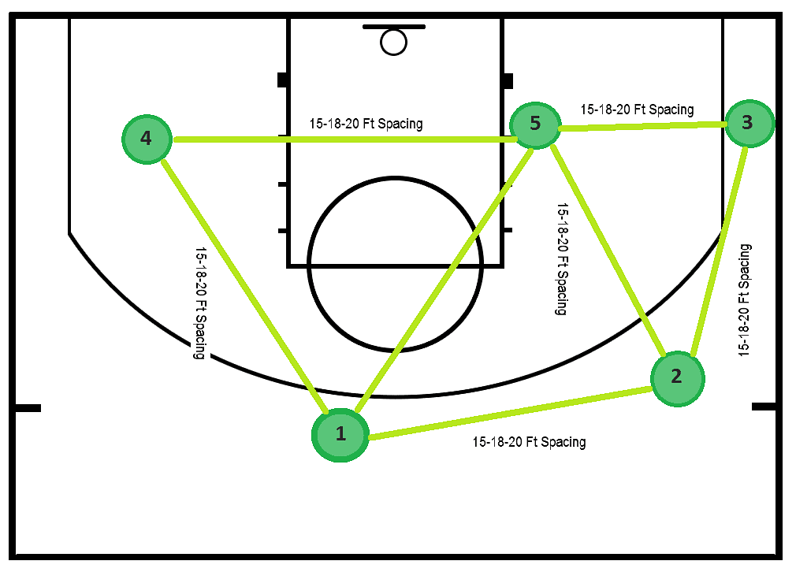

Box and One Defense
The box and one defense is a tactic that involves zone defense and incorporates a man-on-man action. The main purpose of using this defense is to make it so that the other teams strongest player has the least amount of ability to make an impact on the game. This tactic is weak if other players on the opposing team have decent to strong scoring ability, specifically 3-point shooting. This tactic is very niche and shouldn’t be the first option when considering options to beat the opponent.
The Undefeatable
Triangle Offense
Triangle offense is a classical theory of how basketball is to be played. It isn’t as much a offense as it is the fundamental basis for classical basketball. Triangle offense is the basis of spacing the floor, typically 3 players on one side and 2 on the opposite side. The action with the 3 players involves 2 players around the perimeter and 1 player inside the post. Typically, a pass from the top of the key to the other player on the perimeter initiates the sequence. There are multiple options from this pass from a back screen, down screen, or cross screen. These actions are then repeated until a player is open enough to take a shot.
| Season | Points | Offense |
|---|---|---|
| 1st Season | 150 Points | Trianlge Offense |
| 2nd Season | 127 Points | Dribble Drive |
| 3rd Season | 150 Points | Set Offense |